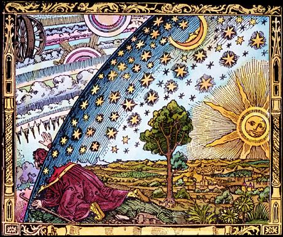

Copyright Michel Galiana 01.04.2006 (c) (r) All rights reserved |
Transl. Christian Souchon 01.04.2006 (c) (r) All rights reservedXIII ASTRONOMER Bow. Orbs circling on lines where, a dazzling display, They spit flames as they speed past and vanish away, Cauldron overflowing with eternities and Twisted reflection of a dead sky, a dead end. Or comets with long hair flowing from crown to heel, With raised breast and pulled in stomach shaping a wheel That is starred refusal of pleasure due to me Compelling my impulse to become more worthy: I shall be master of the unyielding axis, Which keeps pointing down to the nadir, since there is Nothing that rules the world but figures and language. You, eddies of atoms, tied or cancelled by age, Say, which of bent body or of bent universe Is freedom or is fence, which is fair or perverse? May 1st 1992
Listen to "Astronomer" in English